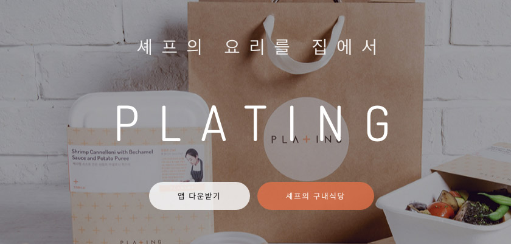

외부로 알려진 행사의 개요는 이렇다.
- ‘플레이탕스 해커톤’ 개최: http://www.bloter.net/archives/262994
시간이 지나, 돌이켜 봤을 때 성공한 많은 일들은 거창한 계획에서 시작하는 것이 아니라, 작은 아이디어나 작은 시도에서 시작한다고 생각한다. 그래서 작은 일들에 늘 관심을 가지고, 남들과 다른 생각이나 행동을 하는 사람들에게 큰 가치를 느끼고 무언가 같이 해보고 싶은 마음을 늘 가지고 있다.
이번에 스마트스터디와 플레이팅이 주최한 플레이탕스 해커톤도 큰 목표를 두고 시작한 것은 아니다.
起.
회사에서 저녁으로 다양한 배달 음식들을 시켜먹는데, 페이스북에서 우연히 플레이팅이라는 저녁 배달 서비스를 이용하는 사람들의 사진을 보았다. 이때까지만 해도, 플레이팅이 자기 레스토랑을 가지고 있는 전문 셰프의 요리를 대신 배달해주는 서비스라고 생각했다. 업계에 이미 많이 존재하는 다른 배달 서비스와 같이.
- 플레이팅 홈페이지: https://www.plating.co.kr/
서비스를 좀 살펴보니 다른 음식점의 음식을 배달하는 것이 아니라, 몇몇 음식의 소개가 되어 있고, 어떤 셰프가 만들었는지, 그리고 그 셰프가 어떤 경력을 가지고 있는지 소개하고 있었다.

플레이팅은 음식 배달 서비스만 하는 회사가 아니다. 오히려 테이블이 없이 배달만 하는, 배달을 위한 자체적인 서비스가 갖춰진 일반적인 음식점에 가깝고 볼 수 있다. 일단은 평상시에 배달해 먹던 치킨, 피자나 분식과는 다른 음식들을 시켜 먹을 수 있어 새로웠다.
아직은 초창기 스타트업이라서 그런지 현재 판매중인 음식들의 종류나 구입 가능 여부를 웹에서 확인할 수 있는 방법이 없었다. 어떤 메뉴가 있는지도 반드시 앱을 설치한 후에야 확인할 수 있어, 구글 시트 등을 통해 각자 먹고 싶은 메뉴를 취합해서 시켜 먹는 우리 회사의 특성상 메뉴 확인이 개별적으로 가능해야 했는데, 이 부분이 아쉬웠다.

承.
나와 같이 하드웨어 부서에서 일하고 있는 파덕님의 NHN NEXT 동기인 져니님이 플레이팅의 소프트웨어 엔지니어라는 얘기를 들었다. 파덕님이 플레이팅 메뉴라도 웹 페이지로 보여주면 안되겠냐고 문의를 했는데, API를 줄테니 직접 해보라는 답변을 듣고 리액트로 직접 작성해버렸다(?)
- 사건의 시작: 파덕님 페이스북 포스팅
- 그렇게 만들어진 전용 페이지: http://smartstudy.plating.co.kr/
그리하여, 스마트스터디 사람들은 플레이팅 메뉴를 손쉽게 열람하게 되어 잘 먹고 잘 살았습니다, 로 끝나진 않았고 개인적으로 집에서 플레이팅 샐러드를 하나 먹고 싶어서 따로 주문하여 회사 주문 품목과 같이 배송 받으려고 했다.
직접 서비스를 써보니, 앱에서의 카드 등록 과정이나 주문시 별도 요청을 적는 부분 등에서 몇 가지 아쉬운 점이 있어 ‘이렇게 개선해보면 좋을텐데...’ 하는 아쉬움을 파덕님을 통해 전했다. 그러자 져니님이 회사에 개발자가 부족하여 우선순위 낮은 이슈들을 쳐내기 어렵다는 다른 아쉬움으로 답해왔다.
이 외에도 이런 저런 아쉬운 점을 셋이서 얘기하다가 농담삼아, ‘아니 그럼 주말에 저랑 파덕님이라도 가서 좀 놀면서 개발하면 좋지 않을까요?’ 하고 가볍게 던진 이야기가 해커톤으로 커지고, 몇 명이 모여서 하는게 아니라 이왕 이렇게 된 거 판을 키워서 재미있게 놀아보자고 회사 대 회사로 얘기하게 되었다.
당장 내일 해커톤을 하자는 것을 뜯어 말려, 각자 준비를 해서 일주일 뒤에 하는 것으로 결정했다. 이어, 져니님이 짧은 시간에 재치있는 글을 곁들여 구글 폼으로 해커톤 신청 페이지를 만들었고, 나는 폼을 수정할 수 있는 링크를 전달받아 만들고 있던 헤더 이미지를 얹고 꾸몄다. 이 폼을 페이스북이나 트위터 등을 통해 알렸더니, 너무 많은 사람이 참가해서 플레이팅 사무실에서 진행할 수 없으면 어쩌나 걱정이 될 정도로 많은 분들이 신청해주셨다.
행사 당일까지 짬짬히 시간을 내서, 져니님은 회사에서 공개 가능한 API 와 웹 서비스들을 정리하며 안내 문서를 작성하였고, 나는 보도자료 준비와 더불어 기념품으로 이번 해커톤의 의미를 담은 기념 머그컵을 사내수공업으로 이십여 개 제작하였다.
轉.
지나치게 열심히, 과하게 준비하려고 하지도 않았고, 또 일부러 대충하려고 하지도 않았던 플레이탕스 해커톤이 시작되었다. 아침 10시부터 저녁 10시까지, 12시간 동안 플레이팅의 논현동 사무실에서 플레이팅의 음식을 점심/저녁으로 시식하며 진행되었다.

다른 해커톤은 주제를 정해주기는 해도, 문제 의식이 명확하지 않은 상태로 팀 빌딩을 하고 시작하게 되어 제대로 진행되지 못하거나 완성도가 낮은 팀들이 속출하는 반면, 이번에는 져니님이 많은 준비를 하여 현재 서비스의 상황과 한계, 문제점들에 대해 기본적인 안내를 잘 해주었을 뿐 아니라, 시식을 위해 주문하는 과정을 직접 체험하고, 주문이 어떻게 배달까지 이어지는지 현장에서 관찰할 수 있어 문제 도출이 잘 되었던 것이 좋았다.
이 지점에서 누군가는 이게 어째서 해커톤이냐? 되물을 수도 있다. 개발자에게 정당한 비용을 지불하고 문제를 해결해야 하는 업무의 영역인데 어째서 해커톤으로, 열정으로 포장하는가, 라는 비난도 있을 수 있다고 생각한다. 하지만, 나는 서로 협업하지 않았던 사람들이 모여 같은 주제에 대해 토론하고 현장에서 문제를 인식, 도출하여 대안을 제시하고 개발하는 전 과정이 해커톤이라고 생각한다. 우리가 왜 꼭 어딘가에 소속되어 직업적인 프로그래밍만 해야 하는가? 무릇 개발자라면 본인이 불편하거나 본인 기준에 맞지 않는 부분에 대해 직접적으로 개선하려는 시도가 더 나은 개발자가 될 수 있는 시작점이 된다고 본다.
져니님의 소개 이후에 돌아가며 짧은 자기 소개로 인사를 나눈 뒤에 점심을 먹으며 각자 개선, 해결하고 싶은 주제를 종이에 적고 칠판에 붙여 팀 빌딩을 시작했다.
結.
플레이팅 측에서 테스트용 API 서버 뿐 아니라, 현재 서비스 중인 앱의 소스 코드와 샘플로 사용할 수 있는 실제에 가까운 가공된 데이터 셋을 제공해준 덕분에 다양한 방법으로 각자의 주제를 구현해볼 수 있었다.
스무 명 정도의 참가자들은 5개 팀으로 나뉘어, 토론을 하기도 하고 일단 개발을 시작하기도 했다. 맛있는 플레이팅의 식사와 디저트가 제공되어 배고픔 없이 개발할 수 있어 좋았다. 개발을 시작할 때에는 팀별로 이름을 붙이진 않았지만, 정리해보니 다음과 같은 팀들이 구성되었다.
- Review, 사용자 리뷰를 개선.
- Sort, 플레이팅 앱에서 식사 메뉴의 정렬 방식을 개선.
- BigBoss, 관리자용 웹 도구의 전반적인 UX를 개선.
- Rider, 배달을 진행하는 라이더들이 사용하는 앱의 UX를 개선.
- 13K, 주문을 배달하기 위해 배차하는 과정과 동선을 개선.
Review
리뷰 팀은 커머스 서비스 기획자와 파덕님이 한 조가 되어 서비스에서 리뷰 기능을 개선하는 미션을 수행하였다. 종이로 만든 프로토타입을 시작으로, 주문 단위 리뷰가 아닌, 주문 내 상품별 리뷰가 가능한 형태를 제안하고 리액트를 이용해 프로토타입을 완성하였다.
Sort
플레이팅의 메뉴 정렬이 하나로 고정된 것이 아쉬웠던 소트 팀은 목록 개선을 제안하고 기존 소스 코드를 수정해서 구현하기도 했지만, 현재 안드로이드 앱 구성의 문제점에 대해 더 많이 밝혀내며 시간을 보냈다.
BigBoss
한 회사에서 같은 팀이 만든 관리자 화면이 서로 다른 구성이라 사용하기 불편할 뿐 아니라, 특정 화면 크기를 가정하고 만들어진 문제점이 있었다. 빅보스 팀은 기존 코드를 처음부터 다시 만들지 않고도 웹 브라우저 상에서 연계하여 조화롭게 사용할 수 있는 방법을 제안하였다.
Rider
라이더 팀은 기존 라이더 앱의 지도가 단순히 배달 지점만 표시하고 있는 점과 주문 목록 표시, 메뉴 확인 및 상태 변경이 불편한 것을 문제로 인식하고, 라이더가 배달시 사용하기 편리하도록 완전히 새로운 앱을 만들었다. 그리고 다른 내비게이션 앱의 외부 호출 로직을 분석하여 라이더 앱에서 바로 내비게이션 앱으로 목적지 입력 처리가 가능하도록 하였다.
13K
내가 참여했던 13K 팀은 해커톤을 진행하며 개발하는 동안 팀원 네 명이서 13 접시(끼니)를 먹었다는 의미로 13K 라는 팀 이름을 정했다. 기존 주문 배차 시스템이 각각의 주문 번호에 대한 라이더 지정을 담당자가 ‘개인적인 노하우’를 바탕으로 일일히 매번 클릭하여 배차하는 과정이 낭비로 느껴져, 이 부분을 개선하고 배달 경로를 최적화 하는 미션을 정했다. 파이썬 웹 프레임워크인 Django로 웹 서비스를 구성하였으며, 해당 시간대의 주문 건들을 읽어와 외부 엔진을 통해 클러스터링 하고, 클러스터 내에서의 이동 경로를 최적화 하려고 했다.
팀원이 네 명이었지만, 나를 제외한 다른 세 명은 고등학생으로 실전 경험이 많지 않은 점을 고려, 클러스터링과 주소 분석, 경로 최적화 등 개별 과제로 구분하여 각자 맡아서 진행하였으며, 나는 웹 서비스를 구축하고 전달받은 덤프 데이터를 데이터베이스로 구축, 외부 프로세스를 호출하여 나온 결과를 다시 웹 서비스로 제공하는 역할을 맡았다.
각자 사용하는 언어가 달라 클러스터링은 C#, 경로 최적화는 Java, 나머지는 Python인 상황인 것이 재미있었으며, C# 구동을 위해 내 맥북에 OS X 용 Mono Compiler를 처음으로 설치하는 경험도 했다. 해커톤이 재미있는 이유는 평상시에는 경험하기 어려운, 일부러 알려고 하지 않는 것들과 낯선 상황들을 마주하여 극복하는 것이라고 생각하는데, 이번에도 마찬가지였다.
서로 다른 언어로 만든 결과물을 stdin/stdout 으로 조합하려는 시도도 재미있었고,
늘 ‘이렇게 하면 뻔히 되는 거겠지’ 생각만 했던 Google Maps API도 실제로 적용해볼 때에야 알 수 있는 부분들이 있었으며,
주문 샘플 데이터를 입력/변환 처리하면서 간만에 위치 데이터를 다루는 기회가 되었다.
비록, 프로그램간 인터페이스를 완전히 맞추지 못한데다 마감까지 시간이 부족하여 완전한 조립은 이뤄내지 못했지만, 급한대로 scipy 패키지의 K-means clustering을 이용해 배차 서비스의 개선을 제안하는데 까지는 성공하였다.
- 13K 팀 소스 코드: https://github.com/lqez/platance-hackathon
- K-means clustering : https://en.wikipedia.org/wiki/K-means_clustering
- K-means in Scipy: http://docs.scipy.org/doc/scipy/reference/cluster.vq.html
Closing
져니님이 해커톤을 마치고 1등이 아닌 2등 팀에게만 상품을 주겠다고 하였는데, 특별히 기준을 세우고 평가를 하는 자리가 아니라 딱히 등수를 가리기가 어려웠다. 박수 소리로 하자는 고전적인 아이디어가 나와 맥북을 통해 데시벨 측정으로 정량적 평가를 하려고 했으나, 박수 소리가 너무 커서 모두 클리핑이 되는 관계로 포기. 대신, 파이썬 랜덤신을 믿어보기로 했다.
팀 명을 리스트에 넣고 10회 셔플, 그리고 첫번째 요소가 아닌 두번째 요소를 출력하여 2등을 뽑기로 했다. 결과적으로 BigBoss 팀이 2등으로 선정되어 플레이팅에서 준비한 소정의 상품을 획득하였다. 정작 랜덤신이 뽑은 1등은 내가 참여했던 13K 팀이었는데... 랜덤은 언제나 옳다(?)
플레이탕스 해커톤은 큰 준비 없이 즐겁게 시작해서 즐겁게 끝난, 비교적 성공적인 해커톤이었다고 생각한다. 무엇보다 참가자들 모두가 즐겁게 식사하고, 떠들고, 적당한 성과를 냈고, 자신이 만든 결과물에 대해 다른 사람과 공유할 수 있는 시간을 가질 수 있어 좋았다.
플레이팅 사무실에 프로젝터가 없다고 하여 사무실에서 간이로 사용하던 프로젝터를 가져왔는데, 덕분에 안드로이드 폰 미러링이나 종이로 프로토타이핑 한 내용들을 같이 보고 얘기할 수 있어 다행이었다. 롤스크린이나 거치대가 없어 책상에 의자를 얹고 사무실 벽에 프로젝션하며 변변치 않게 진행했지만, 이 과정 또한 다들 즐기고 웃으며 같이 하는 분위기로 함께 한다는 느낌이 강하게 들었다.
해커톤 기념품으로 컵을 만들면서 플레이팅의 로고에 들어있는 + 기호화된 알파벳 T를 응용해 컵의 앞/뒷면에 더하기와 곱하기를 새겨넣었다.
해커톤을 통해 각자가 가진 재능과 아이디어, 그리고 유머를 더하고 곱해보자는 낡은(...) 발상에 만든 기념품인데 재미있는 추억을 더 오래 기억할 수 있는 계기가 되었으면 좋겠다.
주말에 시간을 내어 참가해준 모든 참가자분들과 흔쾌히 도장깨기 해커톤을 승락하고 사무실을 내어준 플레이팅 분들에게 모두 감사드린다.